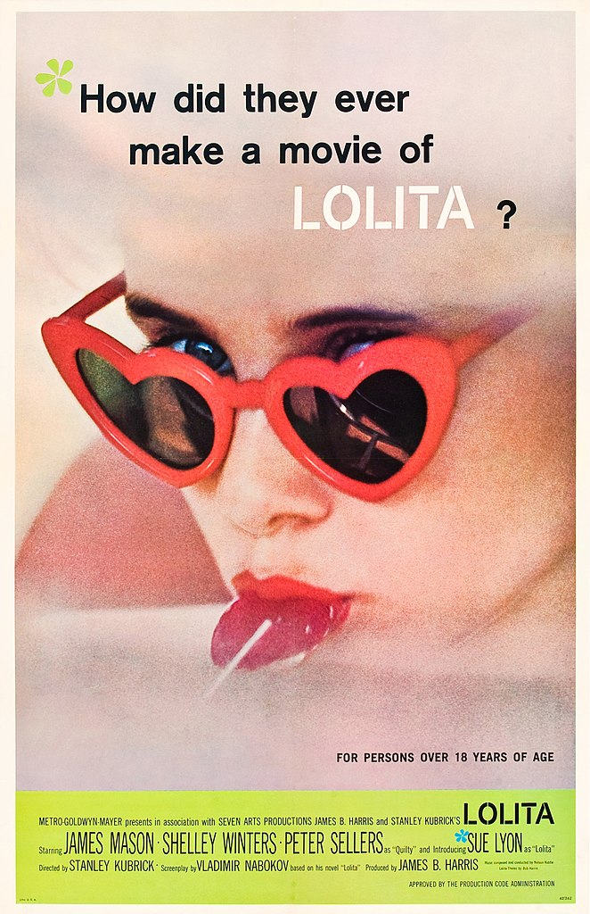
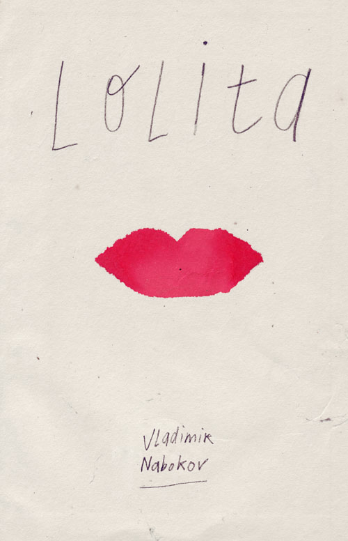
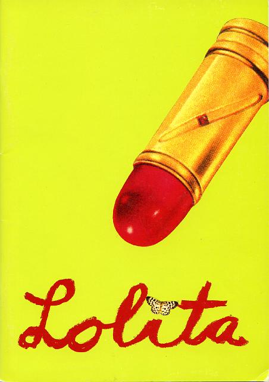
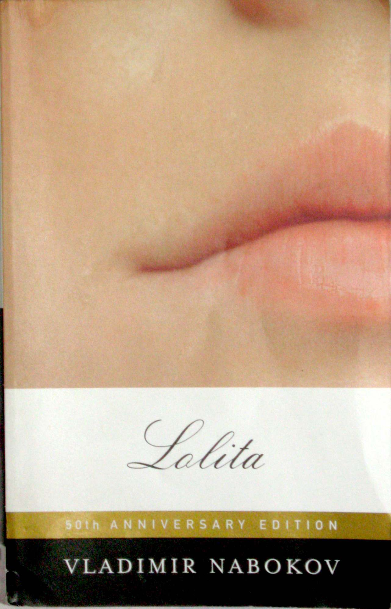
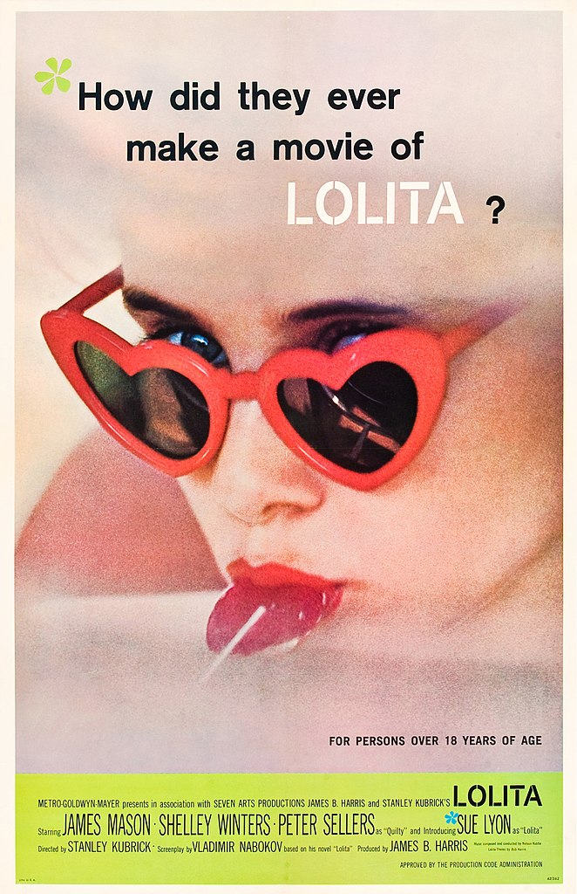
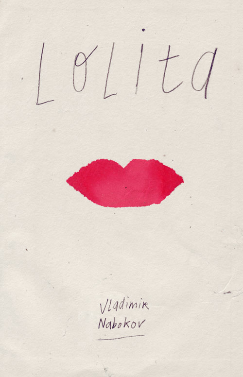
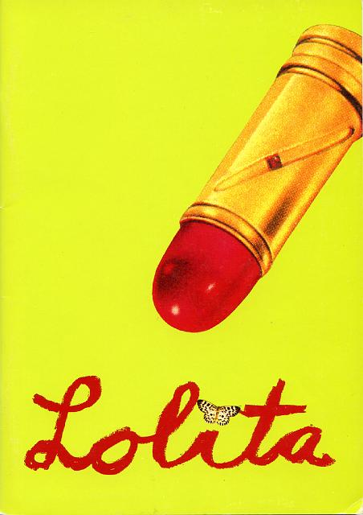
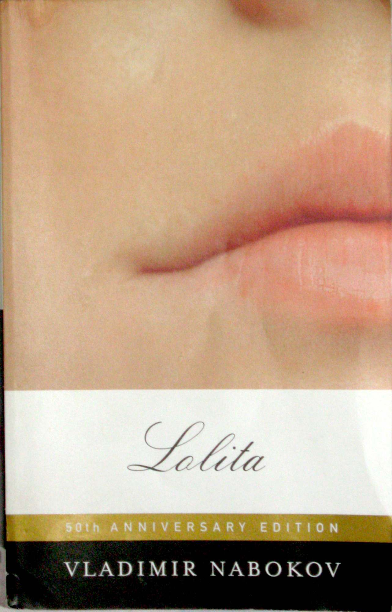

Writing is not natural. It is a technology that facilitates “the reduction of dynamic sound to quiescent space, the separation of the word from the living present, where alone spoken words can exist.”1 It is an acquired skill “governed by consciously contrived, articulable rules.”2 It requires these rules for otherwise it could not fulfil its communicative function. Without them, the receiver could not decode by reading what the sender has encoded in writing. Thus, all writing requires a standard model. In print and typed writing this model is already set, waiting only to be arranged in a decodable order. But for one to acquire the skill of handwriting they first have to learn to replicate that standard model (fig. 1). Nevertheless, immediately after that process is completed or—arguably—as it is happening, the standard model becomes uniquely deformed by the individual that is executing it (fig. 2) (fig. 3). Consequently, handwriting toes the line between individuality and conformity (fig. 4).3
This balancing act is oftentimes interpreted as the individual inscribing themselves in the writing. Even though writing is not an utterance that “well(s) up out of the unconscious,”4 it is still gestural. It can be interpreted as “a gesture which lies somewhere between drawing and conceptual thinking.”5 In handwriting the body acts as a bridge between thought and the written manifestation of that thought. Compared to print, it thus lessens the displacement of an expression from the living present because it still bears reference to the embodied conscience that produced it at a unique moment in time. This quality gives way to the commonly held, arguably intuitive assumption that handwriting reveals something other than what is written about the individual that produced it. The unique standard deviations in someone’s handwriting are read as additional information that is being transmitted, beyond what the letters themselves denote.
To reveal of course implies a passive, involuntary gesture that is discovered. But as our own experiences with writing tell us, it is possible to deliberately affect this gesture. In fact, an essential quality that separates the handwritten word from the typed one is, figuratively speaking, an increased range of motion. Compared to the rigidly enforced, consistently straight left-to-right movement of typing, handwriting is a medium that provides an autonomous form of (self-) expression and self-presentation.
What the continued comparison with speech, printed and typed writing hints at, is that handwriting, like all things, gets its meaning(s) in and through its difference from other forms of communication. For example, a handwritten letter is received differently from an electronic text message and handwritten annotations communicate differently from printed margin notes. While the medium of handwriting is a message that takes on meaning through a system of differences, instances of handwriting become meaningful through how they differ from the standard model they are derived from, which in turn is again a defining characteristic of the medium itself. The exploration of these relationships is at the heart of this text. They mark the point of departure for an investigation into how handwriting’s meaning and role changes in relation to new technologies and how standard deviations in handwriting are read as meaning-producing forms across various contexts.
The first chapter of this text begins this exploration by providing two historical examples. Chapter 2 weaves together examples from popular culture with historical context and chapter 3 discusses handwriting’s meaning in the digital age.
 







{kind=link}
{kind=link}
{kind=link}